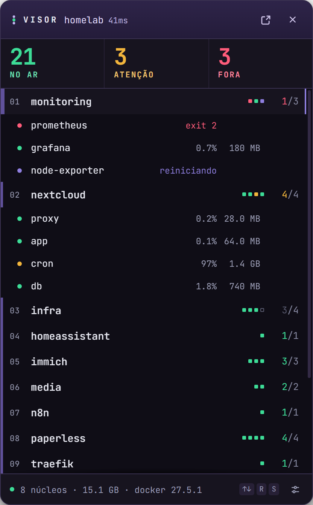
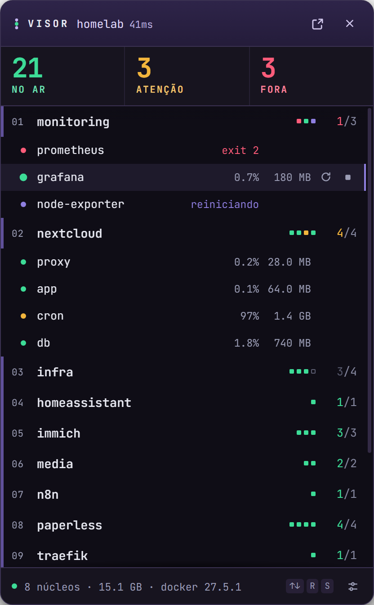
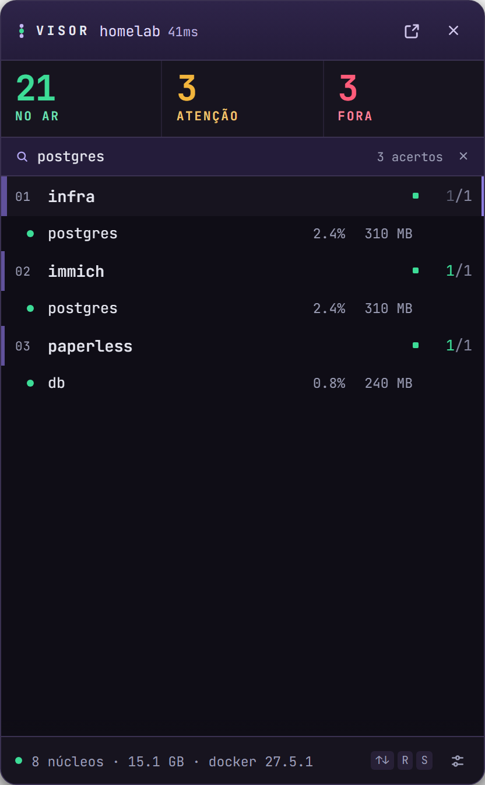
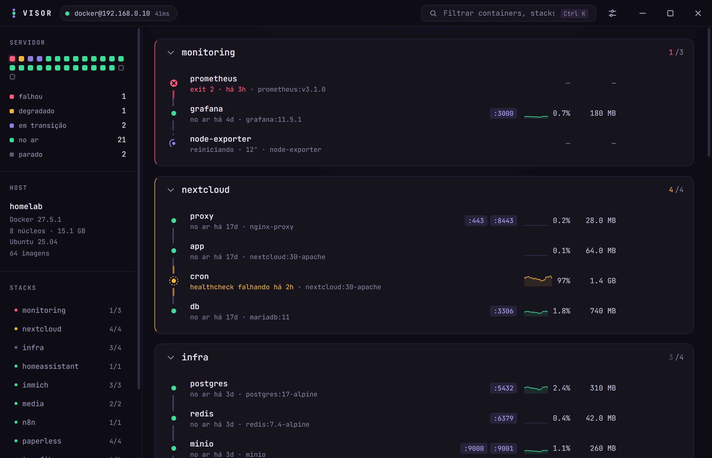
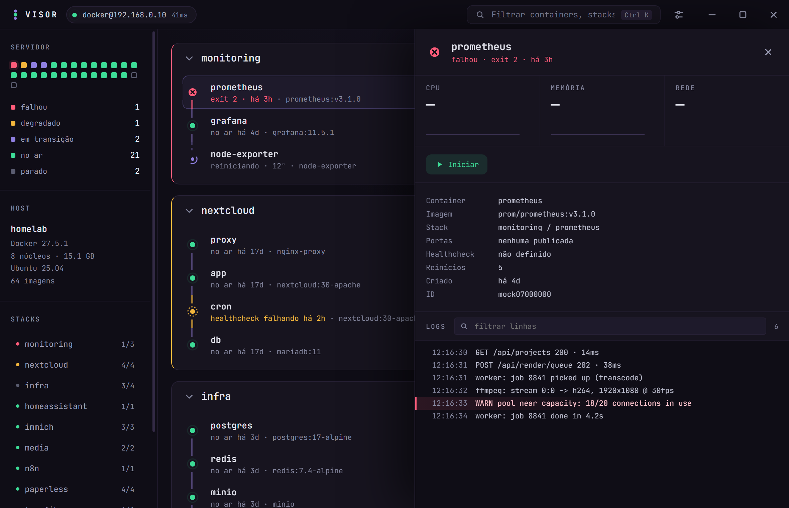
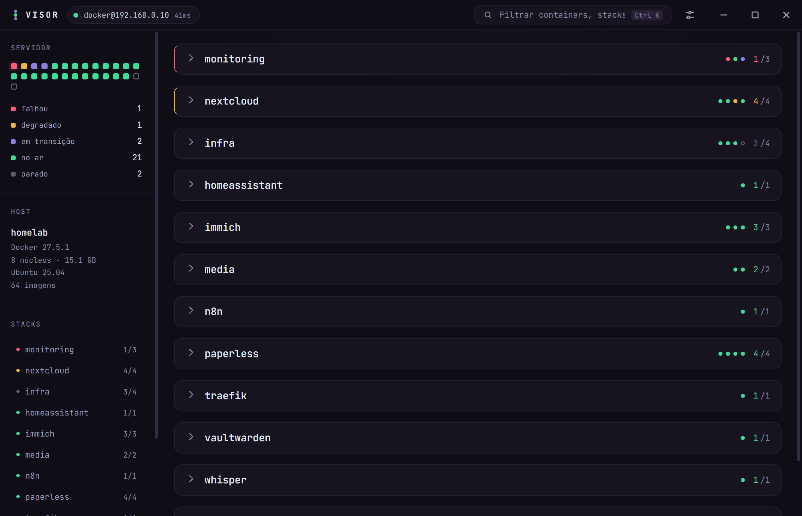
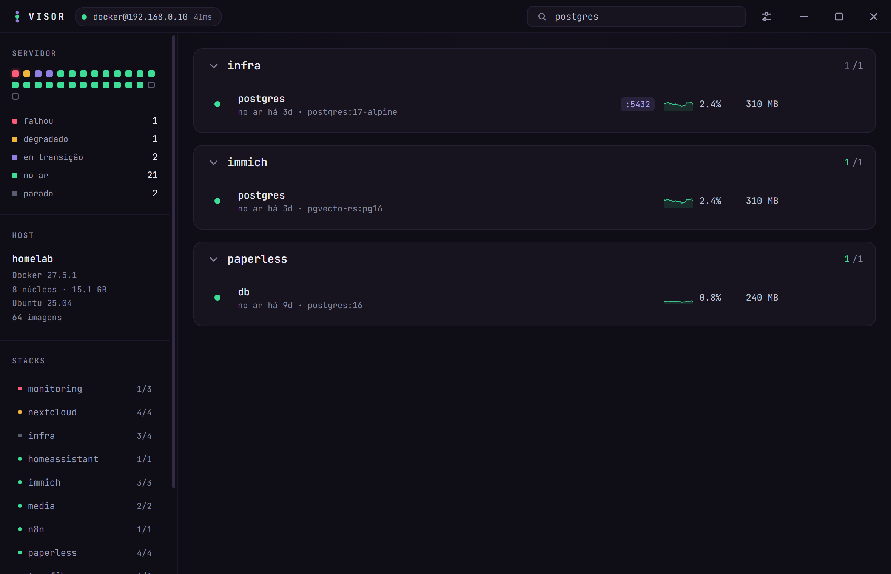
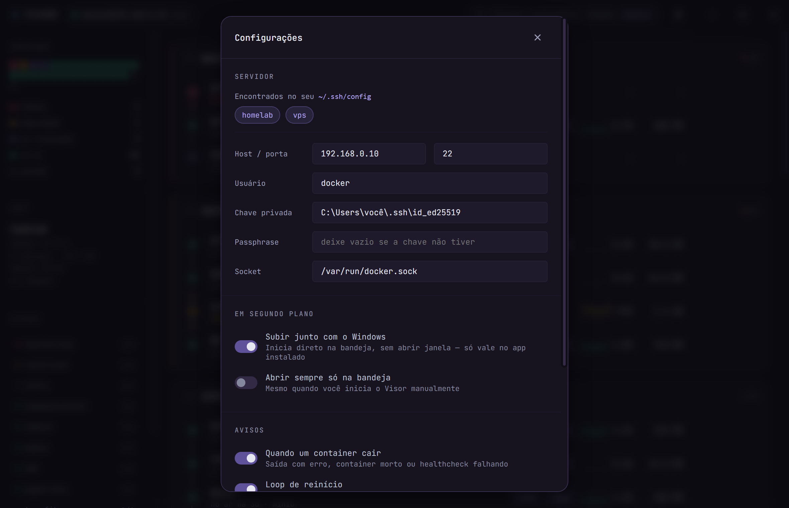
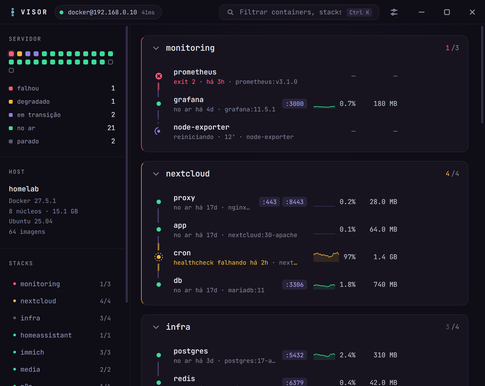

Painel de bandeja para acompanhar os containers Docker de um servidor remoto, direto do Windows. O ícone na bandeja é o app: clicou, abriu ali. A janela completa existe só quando você pede logs e detalhe.
A interface se comporta como um aparelho de medição: densa, catalogada, silenciosa. Cor saturada aparece só quando carrega significado de estado — nunca como decoração.
| Ângulos retos | Só a casca externa tem raio, porque é a borda física do aparelho. Nada de cards arredondados empilhados. |
| Grade visível | Separadores de 1px fazem o ritmo. Não se usa margem solta para criar hierarquia. |
| Lombada | Faixa de cor à esquerda de cada grupo, como etiqueta de trilho. Roxa quando íntegro, cor do defeito quando não. |
| Índice | Grupos numerados 01, 02… — catalogado, não enfeitado. |
| Contraste tipográfico | Placar em 30px/700 ao lado de rótulos de 10,5px com tracking largo. Sem pesos intermediários. |
| Grade de cards | Vira um mural sem hierarquia. Aqui a lista é uma coluna única com lombadas. |
| Gradiente colorido | Só existe um gradiente, no cabeçalho, e entre dois tons do mesmo roxo. |
| Ícones de biblioteca | Conjunto fechado desenhado à mão, 16px, stroke 1.5. Peso visual uniforme. |
| Sombra em tudo | Uma única sombra, na casca do painel, porque ele flutua de verdade sobre o desktop. |
| Cor por decoração | Se um elemento é colorido, a cor significa um estado. Caso contrário é grafite. |
Herança das referências. A paleta violeta e o rail vertical com nós vêm das três referências de partida; a tipografia monoespaçada como face dominante vem do espécime Inky Mono. O que não foi copiado é a estrutura: a timeline virou o eixo de leitura de uma stack do Compose.
As superfícies foram deslocadas para o matiz do acento: o roxo deixa de ser um detalhe e tinge o ambiente. Os quatro valores de estado são as únicas cores saturadas da interface.
Regra de herança. Um data-state no elemento pai define
--state e --state-soft; os filhos só consomem
essas duas variáveis. Nenhum componente conhece a paleta, então trocar um
valor de estado reverbera por toda a interface sem busca e substituição.
Números sempre tabulares.
font-variant-numeric: tabular-nums em toda métrica: sem
isso, as colunas de CPU e memória dançam a cada atualização e o olho
perde a referência.
A tela é quase inteira composta de identificadores técnicos — nomes de container, tags de imagem, portas, percentuais. Uma face monoespaçada alinha esses dados naturalmente e dá a identidade de terminal que a referência tipográfica pedia.
A face de texto (Inter) é reservada a frases corridas: estados vazios, mensagens de erro e dicas. Representa menos de 5% do texto na tela.
Espaçamentos saem de uma escala fixa: 4, 8, 12, 16, 20, 24, 32, 40. Raios: 4, 8, 12, 16 — e 14px só na casca do painel.
| Serviço no painel | 30px |
| Grupo no painel | 36px |
| Container na janela | 50px (duas linhas de texto) |
Os sete estados do Docker colapsam em cinco intenções visuais. Cada uma tem forma própria além da cor, para que a leitura não dependa de distinguir verde de âmbar.
| Docker | Visor | Por quê |
|---|---|---|
running + healthy | no ar | — |
running + unhealthy | degradado | De pé, mas não confie |
running + starting | em transição | Ainda subindo |
paused | degradado | Existe, não serve |
restarting, created | em transição | Estado instável |
exited (0) | parado | Init de compose que cumpriu o papel |
exited (≠0), dead | falhou | Exige ação |
São duas escalas diferentes, e confundi-las já causou um defeito real:
uma stack ia para o topo da lista só porque tinha um container de
inicialização que terminou com exit 0.
Gravidade escolhe a cor do grupo — parado vem antes
de no ar. Urgência ordena a lista — ali
parado empata com no ar, porque um init que
terminou bem não é problema e não pode enterrar o que é.
Rótulo herda a cor do estado — legível e carregando significado. Com contagem zero, volta ao cinza para não soar alarme falso.
A lombada atravessa o grupo inteiro, não só o título: a coluna de cor não pode quebrar justamente onde o grupo está aberto.
Porta publicada usa --iris-text, não --iris-bright: sobre o próprio roxo translúcido o tom mais escuro ficava em 4,0:1.
O eixo fica neutro quando tudo está no ar e acende na cor do defeito exatamente no trecho quebrado.
Série essencialmente ociosa vira linha de base. Desenhar uma reta colorida sugeriria uma medição que não existe.
Desenhados do zero para manter o traço. Nenhuma biblioteca de componentes entra no projeto.
O mesmo renderer é carregado com ?mode=popover ou
?mode=panel. O painel é a forma principal; a janela existe
para o que não cabe em 416px.

| Cabeçalho | Faixa roxa com a marca, host e latência. É a única região arrastável. À direita: expandir para janela e fechar. |
| Placar | Três números em grade dura de 1px. Agrupa por intenção — no ar, atenção, fora — e não por estado do Docker. |
| Lista | Um grupo por stack do Compose, numerado. Recolhido mostra os pips de saúde; aberto mostra serviço, carga e memória. |
| Rodapé | Farol de conexão, versão do daemon e recursos do host. Reconectar e ajustes. |
| Abrir | Clique esquerdo no ícone da bandeja. O painel ancora acima do ícone, dentro da área útil do monitor. |
| Fechar | Clicar fora, Esc, ou clicar no ícone de novo. |
| Ícone oculto | Se o ícone estiver no flyout de ícones ocultos, getBounds() devolve zeros; o painel então ancora pelo cursor. |


↑ ↓ | Anda pela lista achatada: grupos e serviços na mesma sequência em que aparecem. |
→ ← | Abre e fecha o grupo sob o cursor. |
Enter | No grupo, alterna. No serviço, abre o detalhe na janela. |
R | Reinicia o serviço sob o cursor. |
S | Para, ou inicia se estiver parado. |
a-z 0-9 | Começa a filtrar. |
Esc | Duas etapas: desfaz a busca, depois fecha. |
Home End | Primeiro e último item. |
Ctrl+Shift+D | Atalho global, de qualquer lugar do sistema. |
As ações surgem no hover, mas a largura fica sempre alocada. Se a linha mudasse de tamanho ao passar o mouse, a coluna de números dançaria e a leitura se perderia.
A barra do cursor de teclado fica na borda direita para não disputar leitura com a lombada do grupo, que já é uma faixa à esquerda.
Durante uma busca ele segue mostrando o servidor inteiro. Contar só os filtrados faria parecer que o host tem quatro containers quando você digita “postgres”. O número de acertos já está na barra de busca.


stderr ganha guia à esquerda e tom quente, sem virar vermelho berrante.



Notificação nativa só quando um container cai, fica degradado ou entra em loop de reinício (3+ em 5 minutos). Cooldown de 2 minutos por container e silêncio após reconectar — senão o retorno de uma queda de rede viraria avalanche.
O app se registra para subir com o Windows e inicia direto na bandeja com --hidden. Fechar a janela esconde; só "Sair" no menu da bandeja encerra. O registro só vale no app instalado.
Medido em execução, não no preview: scripts/check-contrast.mjs lê as cores computadas pelo próprio Chromium, compondo fundos com alpha. Pior caso atual: 5,16:1.
O painel sobe deslizando enquanto cresce de 96,5% — lê como "saiu da bandeja". A saída é menos da metade da duração: ninguém quer esperar para fechar algo.
300mscubic-bezier(.16, 1, .3, 1)150mscubic-bezier(.4, 0, 1, 1)320ms · 20msmesma curva da entrada260mscubic-bezier(.16, 1, .3, 1)140mscubic-bezier(.22, .61, .36, 1)220mscubic-bezier(.22, .61, .36, 1)140mscubic-bezier(.34, 1.32, .64, 1)3,6s · loopanel some ao expandir140msopacidade + 3px lateral200mscubic-bezier(.16, 1, .3, 1)240mssobe 3px e assenta1,05s · loopsteps(1) — pisca, não desvanece
A saída precisa de coordenação entre processos.
O processo principal avisa o renderer, espera 160 ms e só então
esconde a janela — EXIT_MS em popover.ts tem
de acompanhar --pop-out no CSS. Esconder antes faria a
animação ser cortada no meio.
A janela do painel é transparente. Sem isso a animação aconteceria dentro de um retângulo opaco que já apareceu instantaneamente — o pior dos dois mundos.
prefers-reduced-motion zera toda animação e transição.
Nenhum estado da interface depende de movimento para ser compreendido —
o nó "respirando" é reforço, nunca o único sinal.
Por que o túnel e não o CLI.
Encaminhar o socket Unix dá a Engine API inteira, com os streams de
/events — a UI reage a mudanças na hora, sem esperar o
próximo poll. Nada disso existiria parseando a saída do
docker ps. Zero porta exposta, zero daemon
reconfigurado.
shared/types.ts | Contrato único entre os três processos |
main/tunnel.ts | SSH → endpoint TCP local, com backoff de 1s a 30s |
main/docker.ts | Lista, stats, logs, eventos, agrupamento |
main/popover.ts | Painel ancorado: posição, foco, animação de saída |
main/watcher.ts | Compara snapshots e decide o que merece interromper |
renderer/components/ | Painel, janela, inspetor, ajustes |
styles/tokens.css | Fonte única de cor, tipo, espaço e motion |
| blur → hide | Clicar no ícone não transfere foco, então o blur dispara logo após o show e o painel pisca e some. Resolvido com 420ms de carência. |
| toggle que nunca fecha | Clicar com o painel aberto dispara blur (esconde) e depois click (mostraria). Resolvido lembrando o instante da última ocultação. |
probe.mjs | Confere o caminho SSH → Docker fora do Electron |
shoot-ui.mjs | Captura em viewport exata via CDP |
check-contrast.mjs | Mede contraste no app em execução |
inspect-live.mjs | Lê o que a UI realmente renderizou |